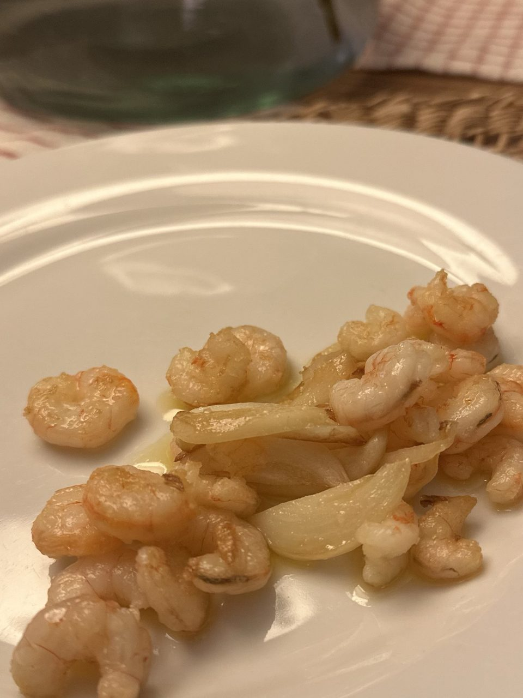

Comida tradicional
alicantina
‹ Todas las recetas
Gambas al ajillo

Ingredientes
250 g de gambas peladas congeladas
4 dientes de ajo
Aceite de oliva (un buen chorro)
Sal
Opcional: guindilla y perejil picado
Preparación
Descongelar.
Pon las
gambas
en un colador dentro de un bol con
agua fría
(nunca caliente) 10–15 minutos. Nada de microondas, que se quedan gomosas.
Secar muy bien.
Sécalas con
papel de cocina
, apretando un poco. Es el paso clave: si llegan mojadas se cuecen en vez de dorarse.
El ajo.
En una sartén con bastante
aceite de oliva
, a fuego medio, echa el
ajo
en láminas o en trozos (y la guindilla si quieres) hasta que empiece a dorarse.
Las gambas.
Sube el fuego al máximo y echa las gambas en una sola capa.
1 minuto por cada lado
, hasta que estén rosadas: si te pasas, quedan duras.
Servir.
Sala al final, añade perejil si quieres y sirve enseguida con el
aceite
de la sartén, que es para mojar pan.